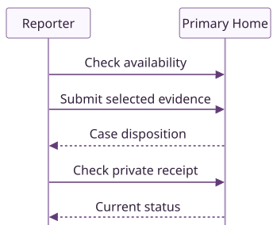

Privacy and reporting
A local hide, an account block, a signed deletion and a safety report each reach a different audience.
Sending a report
The client checks whether the primary Home has a staffed report inbox. The reporter chooses the evidence and keeps a private receipt. Reusing the receipt lets the client retry a submission or look up its outcome.

What a moderator receives
A report includes a category, subject type and a selected reference or excerpt. The primary stores the evidence in its separate readable report inbox. Reports stay outside the federation log, standby ledger and protected feed backups. A moderator reviews the case locally. Closing it records the outcome and clears the evidence.
The receipt is private
Possession of the receipt allows status lookup. The primary stores its digest. The status response discloses the disposition. Open evidence expires after seven days and case tracking expires after thirty days from submission under the implemented retention policy.
Visibility choices
A local hide changes one device’s view. A Home moderation hide changes what that Home serves. An account block filters the authenticated feed and private deliveries. A user can block from an anonymous event using its ID so the Home can resolve the author privately. Author-signed deletion travels to participating peers. Filing a report and taking a moderation action are separate operations.